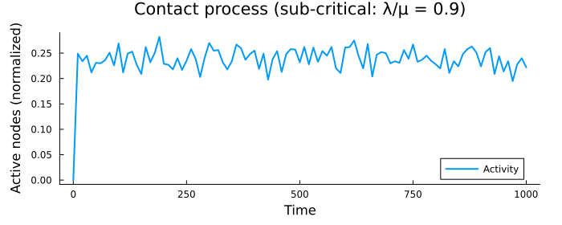
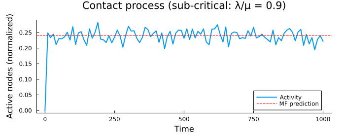

Contact Process on a Network
The contact process is a continuous-time Markov process modeling infection spread on a network. Each node is either inactive (healthy) or active (infected). Active nodes recover at rate mu, while inactive nodes get infected by active neighbors at rate lambda * (active_neighbors / degree). Additionally, spontaneous infection occurs at rate h.
This example demonstrates using MonteCarloX's Gillespie algorithm with event-driven simulation on a graph structure.
using Random, Plots, Statistics
using Graphs
using MonteCarloXSystem definition
A simplified ContactProcess structure with direct rate updates.
mutable struct ContactProcess
network::SimpleDiGraph{Int}
neurons::Vector{Int8}
active_incoming_neighbors::Vector{Int}
rates::Vector{Float64}
mu::Float64
lambda::Float64
h::Float64
end
function ContactProcess(N, p, mu, lambda, h; initial="empty", seed=42)
network = erdos_renyi(N, p; is_directed=true, seed=seed)
neurons = initial == "full" ? ones(Int8, N) : zeros(Int8, N)
active_incoming_neighbors = initial == "full" ? ones(Int, N) : zeros(Int, N)
rates = initial == "full" ? fill(mu, N) : fill(h, N)
return ContactProcess(network, neurons, active_incoming_neighbors, rates, mu, lambda, h)
end
function MonteCarloX.modify!(sys::ContactProcess, event::Int, t)
dstate = sys.neurons[event] == 0 ? 1 : -1
sys.neurons[event] = 1 - sys.neurons[event]
sys.rates[event] = dstate == 1 ? sys.mu : sys.h + sys.lambda * sys.active_incoming_neighbors[event] / length(inneighbors(sys.network, event))
for nn in outneighbors(sys.network, event)
sys.active_incoming_neighbors[nn] += dstate
if sys.neurons[nn] == 0
sys.rates[nn] = sys.h + sys.lambda * sys.active_incoming_neighbors[nn] / length(inneighbors(sys.network, nn))
end
end
return nothing
endParameters
We use a dense ER graph (p=0.5) to approximate mean-field conditions where the analytical prediction ρ = h / (mu - lambda) holds for the sub-critical regime (lambda < mu). Note that the contact process reaches steady state only after a long time; for the SMOKE tests we use shorter T but the full run should show the activity approaching the analytical prediction.
const CI_MODE = get(ENV, "MCX_SMOKE", get(ENV, "MCX_CI", "false")) == "true"
N = CI_MODE ? 100 : 1_000
p = 0.2
mu = 1.0
lambda = mu * 0.9 # sub-critical: lambda < mu
h = 1e-1
T = CI_MODE ? 100.0 : 1_000.0
dt_step = 10.0
measure_times = collect(0.0:dt_step:T);Run simulation
sys = ContactProcess(N, p, mu, lambda, h; initial="empty", seed=42)
alg = Gillespie(MersenneTwister(42))
measurements = Measurements(
[:activity => (s -> sum(s.neurons)) => Float64[]],
measure_times,
)
measure!(measurements, sys, alg.time)Simulate and measure at discrete time points
elapsed_time = @elapsed begin
while alg.time <= T
t_new, event = step!(alg, sys.rates)
measure!(measurements, sys, t_new)
modify!(sys, event, t_new)
end
end1.007886777Extract results
times = MonteCarloX.times(measurements)
activity = MonteCarloX.data(measurements, :activity)101-element Vector{Float64}:
0.0
249.0
234.0
245.0
212.0
231.0
230.0
236.0
251.0
226.0
⋮
260.0
209.0
244.0
214.0
234.0
195.0
228.0
240.0
222.0Print statistics
println("Contact process simulation complete (time: $(round(elapsed_time; digits=3))s)")Contact process simulation complete (time: 1.008s)Plot: activity time series
p = plot(times, activity/N; lw=2, label="Activity",
xlabel="Time", ylabel="Active nodes (normalized)",
title="Contact process (sub-critical: λ/μ = $(lambda/mu))",
size=(700, 280), margin=5Plots.mm)
cf. Martinello et al. PRX (2017)
rho_mf = (lambda-mu-h + sqrt(4*h*lambda + (lambda-mu-h)^2)) / (2*lambda)
hline!(p, [rho_mf]; color=:red, linestyle=:dash, label="MF prediction")
p
This page was generated using Literate.jl.